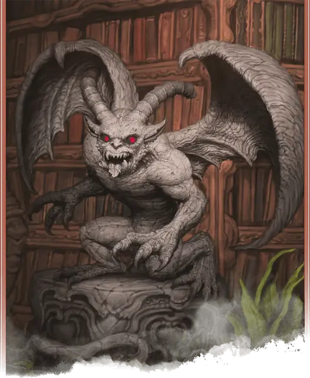

Идол исчадия
Fiendish Icon
Маленький Конструкт, Принципиальный Злой

Класс Защиты 13 Инициатива +1 (11)
Хиты 22 (5к6 + 5)
Скорость 30 футов
| мод | спас | ||
|---|---|---|---|
| СИЛ | 15 | +2 | +2 |
| ЛОВ | 12 | +1 | +1 |
| ТЕЛ | 13 | +1 | +1 |
| мод | спас | ||
|---|---|---|---|
| ИНТ | 6 | −2 | −2 |
| МДР | 11 | +0 | +0 |
| ХАР | 6 | −2 | −2 |
Иммунитеты Огонь, Яд; Испуганный, Истощение, Оглохший, Окаменевший, Отравленный, Очарованный, Парализованный
Чувства Тёмное зрение 60 футов, пассивное Восприятие 10
Языки понимает Общий и Инфернальный, но не говорит
Опасность 1 (200 опыта; БВ +2)
Особенности
Сопротивление магии. Идол совершает с Преимуществом спасброски от заклинаний и прочих магических эффектов.
Действия
Мультиатака. Идол совершает два Размашистых удара и использует Огненный выброс.
Размашистый удар. Бросок рукопашной атаки: +4, досягаемость 5 фт. Попадание: 4 (1к4 + 2) Дробящего урона.
Огненный выброс. Спасбросок Ловкости: Сл 11, каждое существо в 5-футовой Эманации, исходящей от идола. Провал: 7 (2к6) урона Огнём.
Бонус мастерства +2
Среда обитания Город
Сокровища Отсутствуют
Идол исчадия
Оживлённое дьявольской магией изваяние
Идолы исчадий — это гротескные разумные статуи, изображающие ужасных исчадий. Эти создания обретают жизнь в результате зловещих ритуалов. Идолы способны взрываться адским пламенем, испепеляя врагов, и часто притворяются обычными изваяниями, пока не набросятся на незваных гостей из засады.
Совершите бросок по таблице «Облик идола исчадия» для вдохновения или сами определите внешний вид идола.
Облик идола исчадия
| к6 | Идол исчадия изображает… |
| 1 | Мускулистую демоническую фигуру, держащую зажжённый канделябр. |
| 2 | Толстого беса, облизывающего зазубренный нож. |
| 3 | Приземистую фигуру в балахоне, из-под которого торчит раздвоенный хвост. |
| 4 | Херувима с острыми клыками и приветливо протянутой рукой. |
| 5 | Шесть ворон, сидящих друг на друге и образующих грубое подобие гуманоида. |
| 6 | Рогатое исчадие, жутко напоминающее одного из персонажей. |